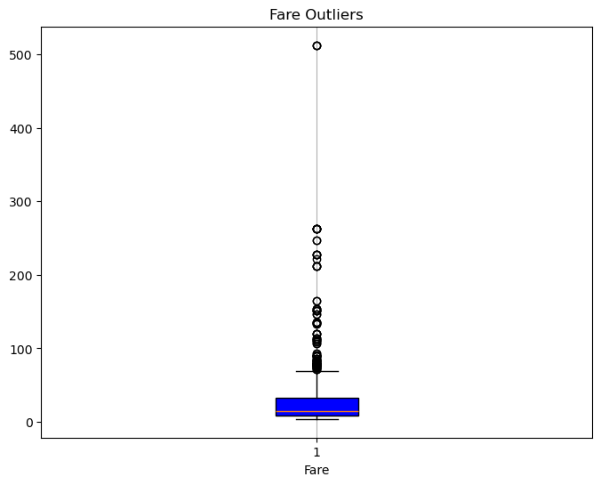

The Age of Misinformation. A Data Scientist’s Role.
An investigation into online misinformation and how data science is involved.
Python
Ethics
Think Piece
Published
October 25, 2024
The Age of Misinformation: A Data Scientist’s Role
Numbers have an inherent power to them. They bring a sense of power and credibility to the argument, whether it is genuine or not. Be it in an advertisement, news article, or post on social media, the inclusion of statistics makes us more inclined to believe the information at face value. This perception stems from the belief that “the facts” are objective and immune to manipulation.
The reality is that numbers are so easily manipulated. They can be selective to show exactly what a company wants, misrepresented in visuals to seem more or less extreme or be flat-out changed to shape the result. Context, methodology, and interpretation are purposefully hidden or ignored for the sake of convincing consumers.
In this post, I’ll be exploring and demonstrating how simple it is to manipulate data to fit my narrative. Hopefully, this will make people approach data and statistics in media with a critical eye.
For this example, I’ll be working on a titanic dataset. This is a labeled dataset meaning we know the correct answers for our predictor variable “Surived”. In addition, because the dataset is historical, we know the data to be unbiased. This specific dataset does not include all the people on the Titanic, but it is a random sample of the full data. To start, I’m importing my libraries, doing simple exploration, and cleaning where needed.
# import our librariesimport pandas as pdimport matplotlib.pyplot as pltfrom sklearn.linear_model import LogisticRegressionfrom sklearn.model_selection import train_test_splitfrom sklearn.metrics import accuracy_score, confusion_matrix# check out our datasetdf = pd.read_csv("titanic.csv")print(df.shape)df.head(5)
(891, 5)
Survived
Pclass
Gender
Age
Fare
0
0
3
male
22.0
7.2500
1
1
1
female
38.0
71.2833
2
1
3
female
26.0
7.9250
3
1
1
female
35.0
53.1000
4
0
3
male
35.0
8.0500
print(f"Missing values per column:\n{df.isna().sum()}")print(f"Column dtypes:\n{df.dtypes}")
Missing values per column:
Survived 0
Pclass 0
Gender 0
Age 0
Fare 0
dtype: int64
Column dtypes:
Survived int64
Pclass int64
Gender object
Age float64
Fare float64
dtype: object
Luckily, there are no missing values we have to fix. In this next step, all I’m doing is changing the columns to be useable in our models later on. 0 will represent Male passengers and 0 1 will represent female passengers.
# including this next line to avoid errors from future versionpd.set_option('future.no_silent_downcasting', True)# changing column "Gender" to boolean values. df["Gender"] = df["Gender"].replace({"male": 0, "female": 1})print(df["Gender"].value_counts())
Gender
0 577
1 314
Name: count, dtype: int64
For the last step in cleaning, we’ll be checking the “Fare” column for any outliers because that could have a huge effect on our model.
# we'll be using a box and whisker plot for outlier detectionplt.figure(figsize=(8, 6))plt.boxplot(df["Fare"].dropna(), patch_artist=True, boxprops=dict(facecolor="blue"))plt.title("Fare Outliers")plt.xlabel("Fare")plt.grid(axis='x')plt.show()

Unfortunately, there are many outliers on the high end for fares. For this dataset, it would not be appropriate to remove or replace any of our outliers because we could be losing valuable information about what influences the predictor variable “Survived”. However, we still need to perform outlier detection to understand the impact it will have on our model later. Knowing we have so many high-end outliers in our data could provide insight when we evaluate later on.
Model 1 - Pure Data
Now that our dataset is ready, we’re going to make a simple train/test split to use in our models. Our predictor variable will be “Survived”, where 0 represents a passenger did not live and 1 represents a survivor. I’m using a decision tree that is limited to 3 splits for the sake of a simple visualization.
x = df.drop(columns=["Survived"]) # drop y variable, keep the resty = df["Survived"]# train/test split. 80 train, 20 test.xtrain, xtest, ytrain, ytest = train_test_split(x, y, test_size=0.2, random_state=1)print(f"xtrain shape: {xtrain.shape}")print(f"ytrain shape: {ytrain.shape}")print(f"xtest shape: {xtest.shape}")print(f"ytest shape: {ytest.shape}")# creating and fitting our modelmdl1 = LogisticRegression(random_state=1)mdl1.fit(xtrain, ytrain)# create predictionsypred = mdl1.predict(xtest)
Now that our model has ran we’re going to look at it’s performance. Please note that LogisticRegression is being used here for the sake of simplicity for our example. LogisticRegression assumes the variables are independent of each other, meaning one value has no affect on the others. For our dataset, the x variables are independent so we don’t have to worry about that. It is also sensitive to outliers. We screened our float value, “Fare” for outliers earlier and found many. However, as discussed earlier, it is not appropriate to remove these so we will be evaluating with that in mind.
We’ll be looking at the overall accuracy score and a confusion matrix to evaluate. The accuracy score is straightforward, its the number of correct predictions over the total points predicted.
accuracy = accuracy_score(ytest, ypred)print(f"Accuracy of Model 1: {accuracy:.5f}")
Accuracy of Model 1: 0.79888
Although far from perfect, a (rounded) accuracy score of 80% is a fairly good performance for our LogisticRegression model. In other words, our model correctly predicted 143 points of our 179 included in ytest. I’ll discuss this more later, but note that even our labeled, unedited data fails to predict points perfectly.
Next we’ll be looking at a confusion matrix. This provides a simple visual to see how our model is predicting points. This will provide insight into what types of points the model is best at predicting and where it struggles.
In the upper left corner of our confusion matrix is the true positives. That means our model correctly predicted a passenger survived in 88 cases. In the lower right corner are our false negatives. Model 1 correctly predicted instances where the passenger died 55 times. These two sections combined are what make up our accuracy score from earlier. Accuracy is the most widely understood metric because it looks at the correct predictions over the incorrect ones. However, this may not be the best metric in all cases because it can make the results look really good, even when the incorrect guesses are very costly. In other words, for models where predicting wrong could have consequences, accuracy scores may not be the best representative of overall performance. In this context, accuracy works well because there are no ramifications if the model guesses correctly.
Despite having no ramifications from false positives and negatives, its still crucial to understand what those numbers mean in this context. Knowing we have labeled data, and that this is historical so we know it to be true, the model still makes mistakes. While a 79% chance of correct guesses is performing well, in other contexts, consumers need to be aware of the remaining 21% and the impact it could have.
Model 2 - Falsified Data
If incorrect classification on labeled data doesn’t fully prove my point, I’m going to show just how easy it is to manipulate our data. Say the Titanic happened today, and we work for a news outlet that wants to push the idea that the famous line ‘women and children first’ was completely true, regardless of class/ticket, and the lifeboats were foolproof.
From our original dataset, this is what the number of women who did not survive looks like.
gender_count = df[(df["Gender"] ==1) & (df["Survived"] ==0)].shape[0]print(f"Number of instances where female passengers did not survive: {gender_count}")
Number of instances where female passengers did not survive: 81
by_gender = df["Gender"].value_counts()print(f"Total passengers by gender: {by_gender}")
Total passengers by gender: Gender
0 577
1 314
Name: count, dtype: int64
81 of the 314 women present in this dataset did not survive. This doesn’t push our narrative as strongly as we’d like. With just a few lines of code, I can completely change our dataset and the story of the Titanic.
edited_df = df.copy()# change all rows where "Gender" = 1/Female to Survived = 1/Trueedited_df.loc[edited_df["Gender"] ==1, "Survived"] =1# verify changesgender_count_edited = edited_df[(edited_df["Gender"] ==1) & (edited_df["Survived"] ==0)].shape[0]print(f"Number of instances where female passengers did not survive: {gender_count_edited}")
Number of instances where female passengers did not survive: 0
Now we’ll run the same model as we did earlier on the edited data frame. We’ll also look at the same metrics.
# we need to re-do our train test split to use the edited_dfx_edited = edited_df.drop(columns=["Survived"])y_edited = edited_df["Survived"]# 80 train, 20 test.xtrain_edit, xtest_edit, ytrain_edit, ytest_edit = train_test_split(x_edited, y_edited, test_size=0.2, random_state=1) # must use the same random state# creating and fitting our modelmdl2 = LogisticRegression(random_state=1)mdl2.fit(xtrain_edit, ytrain_edit)# create predictionsypred2 = mdl2.predict(xtest_edit)accuracy2 = accuracy_score(ytest_edit, ypred2)print(f"Accuracy of Model 2: {accuracy2:.5f}")conf_matrix2 = confusion_matrix(ytest_edit, ypred2)print(conf_matrix2)
Accuracy of Model 2: 0.86592
[[90 0]
[24 65]]
Please note that we used the same random state for both of our train tests splits, so the rows were sorted into the same subdatasets for this model as the first one. From the accuracy score alone, it’s clear that model 2 performed much better than model 1. In the bottom left corner are our only incorrect classifications. This quadrant represents false positives, where the model predicted they survived when they actually died. This fits our narrative that all women made it off alive much better than the unedited results.
Editing our dataset completely changed the results of the model and it only took one line of code to make the changes. It is incredibly easy to manipulate data to push our narrative.
For this demonstration, we know model 2’s results are not true. It’s also historical data so changing results doesn’t really have an impact. It won’t change the reality of who survived or not. But say we instead worked for an insurance company, and we were told to decrease the amount paid out on claims. Or we worked in sales and our boss asked us to make the figures that affect his bonus look better. Then it actually impacts people. Claims that truly needed it are rejected and the boss looks good on paper while the business is actually failing. Here it becomes the ethical responsibility of data scientists to uphold truthful data and results.
A Data Scientist’s Role
Today news and information are constantly being uploaded, updated, changed, and can be posted by anybody. Although untruthfulness or straight-up lies have always been present in journalism, the sheer volume of news available thanks to the internet has exaggerated this problem. It has quickly become the responsibility of the consumer to approach the news with a skeptical mind. It’s extremely difficult to tell what’s real and what’s not at first glance or without additional research.
What many consumers are unfamiliar with is how seeing a single statistic in an article or social post can influence how they approach what they read. As mentioned earlier, the inclusion of a single digit can make the news source seem more reputable. But as we’ve seen and done now, it is all too easy to falsify this.
This is where a data scientist’s responsibilities come in. Its already hard enough for people to navigate the insane amount of information available at all times, it shouldn’t be made any harder for personal or commercial gain. The rapid spread of misinformation can cause fear, outrage, confusion and fuels hatred in todays social climate.
It’s part of our jobs to do our due diligence on the sourcing of our data, be aware of any bias present in sampling, and use the best data possible for training our models. Maintaining the integrity of the data and telling the complete truth is a moral obligation. We’re also responsible for how people interpret results. How we choose to display our findings when it comes down to scale, organization, and what we model in the first place all have an effect on how people interpret it.